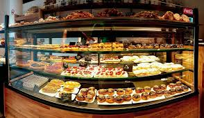

 甜點介紹 廣式點心（飲茶），中國廣東及香港等地「飲茶」時主要的茶點；「點心」的粵語發音也是多種西方語言中「dim sum」（點心）一詞的由來） 麵點，用麵做成的點心，流行於中國北方 中式糕點，一種中國傳統的點心 西點，西方式的點心，例如法國的馬卡龍 和菓子，日本傳統的點心 韓果，朝鮮半島傳統的點心 琉球果子，琉球傳統的點心 餜子 甜點酒，用於甜點搭配的酒 在正餐以外的食物，包括但不限於零食。
麵點，用麵做成的點心，流行於中國北方
中式糕點，一種中國傳統的點心
西點，西方式的點心，例如法國的馬卡龍
和菓子，日本傳統的點心
韓果，朝鮮半島傳統的點心
琉球果子，琉球傳統的點心
餜子 甜點酒，用於甜點搭配的酒 在正餐以外的食物，包括但不限於零食。